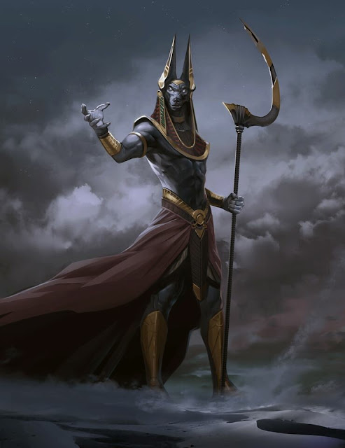

Anubis, also called Anupo, is the Egyptian god protector, guardian, and guide of the dead. In Egyptian mythology, he helps the dead to meet Osiris. For this purpose, he is associated with the eye of Horus and is also appointed as the god of funerary rites, such as the mummification process of the pharaohs.
